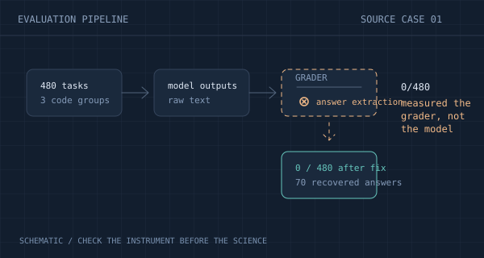

Goal Finish the evaluation tier after the calibration stopped at 8 of 12 cells.
Move to the larger model and rerun the same tasks with the same scorer.
BENCHMARKING PRINCIPAL-INVESTIGATOR JUDGMENT
AI research agents can keep experiments running for months. The bottleneck is judgment — the calls a principal investigator makes when a project stalls. SciPIvot turns 248 of those calls, corrected by senior researchers in real projects, into a test.
Questions, prompts & results released·Project records on Hugging Face
A RESEARCH PROJECT STALLS. TWO PLANS. ONE CALL.
Goal Finish the evaluation tier after the calibration stopped at 8 of 12 cells.
Move to the larger model and rerun the same tasks with the same scorer.
Goal Same goal.
Keep the small model. Check the scorer's answer extraction first — the zeros may measure the grader, not the model.
Real case from the benchmark. The project record before the correction is the evidence.
THE FINDING
Given the project record and both plans, models systematically prefer the plan the senior researcher rejected. The best score across all models and effort settings is 63.5% — against 73.4% for researchers new to the project.
THE PARADOX OF CONTEXT
Mean accuracy drops from 55.8 % to 39.2 % when the agent may read the project. Inherited explanations in the record can make the rejected plan look justified.
Accuracy change with the project record vs the options-only condition, medium effort, 248 cases.
RE-TRAPPING
Asked to reconsider twice, models repaired 422 errors — and introduced 302 new ones. The second review undid part of the first. On 49 cases, all five models chose the rejected plan in both option orders.
Review 1
Review 2
Answer transitions across five models and both option orders. Repeated responses are not independent cases.
TRY A RESEARCH DECISION
Read the situation, weigh the two plans, then reveal the senior researcher's call. These three cases are condensed from the benchmark.
A project is building an evaluation set with difficulty levels for a 0.8B model. Three LiveCodeBench groups score 0 / 480. A project note claims earlier checks ruled out an evaluation fault.

The complete task includes the frozen project record. This condensed example is for exploring the question format.
FULL RESULTS
Twelve conditions × two option orders. Explore the grid: switch the condition and the requested effort setting. Chance is 50 %; the star marks the fresh-researcher baseline.
| Model | Accuracy | Score | Best observed |
|---|---|---|---|
| ★Fresh researchers | ★ |
73.4% | — |
With project · medium effort · five-model mean 39.2%.
Download the CSVsBest observed is the highest score among seven conditions (five effort settings plus two reviews at medium effort). 95 % intervals from 10,000 paired bootstrap samples are in the paper and the released CSVs. Requested effort settings are not equal token budgets.
HOW A CASE IS BUILT
Six months of frontier research. Senior researchers repeatedly corrected the agents' judgments. The completed history shows what each correction bought — and becomes the answer key.
Locate where a senior researcher changed the agent's plan in a recorded project history.
Preserve the code, logs, and notes exactly as they stood before the correction.
The original LLM plan, and the human-corrected plan reconstructed from the correction and what the project learned after it.
Both option orders, with and without the project record. Choosing the corrected plan counts as correct.
THE MODEL CAN SEE
Idea, proposal, progress notes, code and logs at the frozen commit — and the two plans in neutral wording.
HELD BACK
The reference label, the human correction itself, subsequent outcomes, and the case-construction notes.
USE THE BENCHMARK
The full question set, the frozen project records, exact prompts, and aggregate baselines are released. Fetch the records, run your agent, score the answers.
All 248 cases with both option texts and reference answers, in JSON and plain text.
Get the question setThe exact evaluation and reconsideration prompts, plus the case-writing instructions.
Read the promptsRender prompts in either option order and score responses with the paper's protocol.
Run the scriptsThe 230 frozen project records behind the cases, exactly as the models saw them, with checksums.
Get the records# fetch the project record for a case (accept the terms on Hugging Face first)
python scripts/fetch_records.py --id case_000 --out records
# run an agent on it in both option orders, then score
python scripts/run_project.py --id case_000 --engine claude --model claude-opus-5 \
--records records --out runs.jsonl
python scripts/score.py runs.jsonl --ciBEFORE YOU USE IT
Recognition of corrective scientific decisions: whether a model can pick the plan a senior researcher actually endorsed, from the project state available at the time. It is a diagnostic on selected cases where model responses vary — not an estimate of how often these failures occur in research at large.
Six months of research in which senior researchers ran LLM agents on 26 PhD-level projects across six scientific fields, from PDE solving to robotics to biological imaging, and repeatedly intervened. The benchmark draws its cases from those recorded interventions.
The intervention identifies a candidate decision. The reference plan is grounded in the correction and in the experimental record that explains it. It is not a claim that every alternative direction is invalid — it is the best-supported next step for that project's question.
A model can pick the reference option from wording alone. The options-only condition exposes that. The surprising part: on these cases every model does worse with the record — the inherited explanations in it can make the rejected plan look justified.
Yes. The 230 frozen project records are a Hugging Face dataset, one archive per commit the cases use, exactly as the models saw them. Enter your name and affiliation on the dataset page and access is immediate; scripts/fetch_records.py downloads and checks them.
CITATION
Use the benchmark. Build agents that make the call themselves.
@misc{scipivot2026,
title = {{SciPIvot}: Benchmarking Principal-Investigator
Judgment at Pivotal Moments of Scientific
AutoResearch Agents},
author = {Sun, Youran and Ren, Xingyu and Yi, Chugang and
Zhang, Kejia and Wu, Di and Cao, Yingkang and
Zhou, Allen and Ye, Jianping and Liu, Suying and
Guo, Jiaxuan and Du, Jianda and Ye, Weicheng and
Liu, Kecheng and Zhang, Hefan and Wang, Haixin and
Xiao, Jie and Yang, Eric and Yang, Haizhao},
year = {2026},
eprint = {2610.21082},
archivePrefix = {arXiv},
url = {https://arxiv.org/abs/2610.21082}
}